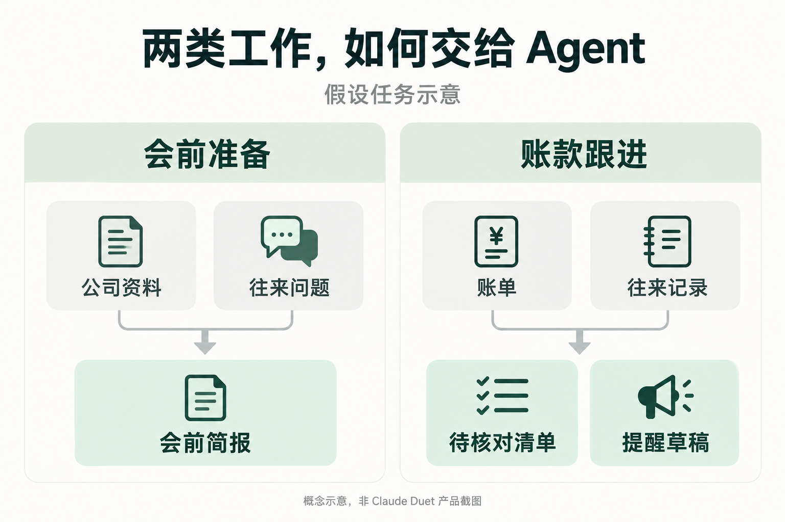
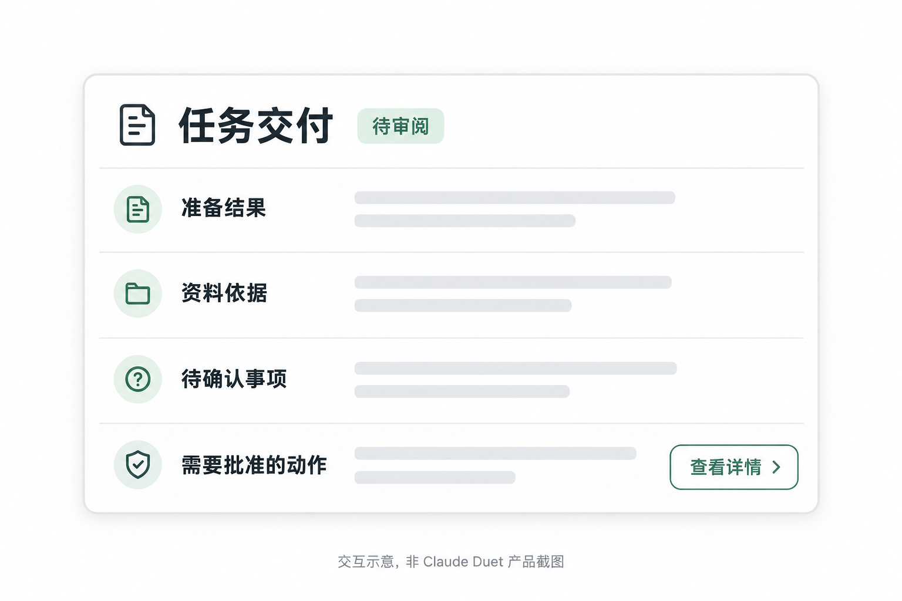

Claude 有了一个新搭档，叫 Duet。
2026 年 10 月 21 日，Anthropic 宣布开放 Claude Duet 的研究预览。这款主动式 Agent 面向专业人士和小企业经营者，尝试让 Claude 从一次次对话走进持续进行的工作：接下任务，在用户离开后继续推进，需要决定时再找人。
首批资格通过候补名单向美国 Pro、Max 用户开放。
它属于最近接连出现的 Personal Agent，也就是个人智能体。Meta 的 Muse、OpenAI 的 Dots 已经先后入场，现在，Claude 也加入了。
几家公司的产品都在承诺持续替用户办事。Duet 选择怎样的工作作为起点，会怎样参与这场竞争？
从客户会议，到一笔没到账的款
先看两件具体的事。
假设你明天下午要见一个客户，需要整理公司资料、找出之前交流中没有解决的问题。以往，你可能会分别搜索、翻邮件，再把材料交给 AI 总结。
另一件事更琐碎：月底有几笔款还没收到，要核对账单和往来记录，判断哪些客户需要提醒，再准备邮件。
这两类任务里，写一份简报或一封邮件只占一部分。找到材料、核对背景、补齐缺口，也得有人负责。
Duet 的官方说明把会前简报、检查未付款项和准备提醒邮件列为使用示例。这些例子指向同一种需求：把散落在不同工具里的材料，接成一项可以继续处理的工作。
在这个方向上，AI 的输出也会接受更具体的检查。资料齐不齐，金额对不对，邮件是否发给正确的人，都是会影响后续工作的细节。

让任务继续，需要一个能工作的地方
官方帮助文档说明，Duet 有自己的云端电脑，可以使用连接的应用，也能通过云端浏览器访问网站。
这给“离开以后继续工作”提供了一个直观解释：执行环境留在云端，不需要用户一直开着本地设备守着任务。
不过，运行环境只是其中一部分。一个 Agent 是否真的能接走工作，还取决于它能拿到什么资料、如何处理缺口，以及何时需要把问题带回给用户。
比如客户邮件里提到“按上次商量的来”。如果相关背景没找到，继续生成一份完整方案，可能比停下来问一句更糟。在这样的任务里，知道何时该停下来补充信息，同样影响交付质量。
后台运行同样消耗资源。Duet 的工作与 Claude 共享套餐用量，所以持续执行并不意味着无限工作。用户需要将后台消耗与得到的结果放在一起衡量，持续运行的时长本身并不说明收益。
为什么现在，大家都想做个人 Agent？
把 Duet 放回近期的产品发布里，会更容易理解它的新闻价值。
9 月，Meta 发布 Muse，OpenAI 推出 Dots。随后，Anthropic 也把持续工作、主动协作的能力组织成 Duet 这样的产品。
从这些发布共同强调的使用方式看，几家公司都希望用户愿意持续委托工作。
这也是 Duet 入场值得关注的地方：当产品开始替人跟进任务，竞争就会延伸到一次回答结束之后。
对产品来说，这种关系值得争取。一次回答结束后，用户很容易换一个工具；一项长期任务却会留下背景、反馈、习惯和后续安排。它们可能成为下一次协作的起点。
这或许解释了为什么持续协作会成为值得争取的方向。至于用户是否愿意留下，则取决于日常交付能不能配得上这个承诺。
Claude 选择了工作，但这条路上并不空
Duet 的发布明显把专业工作放在前面。相较于一个包揽所有生活需求的承诺，客户跟进、业务分析和资料准备，更容易说清楚任务是什么。
这种选择也会带来更明确的检验。用户可能容忍建议不够有趣，却很难忽略一份客户资料里的关键错误。
而且，小企业方向已有竞争者。Meta 已推出面向小企业的 Muse；OpenAI 也在 Dots 的发布中介绍了面向组织的专业化方向。把三家简单分成生活、长期目标和工作三块，会掩盖这些重叠。
Claude 能不能把自己熟悉的工作方式带进持续任务里，是值得观察的问题；“专注专业场景”本身，还不足以证明产品更好。
会做多少事之外，还得看怎么交回来
Duet 的设计要求在发送、付款、签署和删除等动作前获得批准。Stripe 介绍的 Link 采购流程，也保留了用户批准购买的步骤。
这意味着，用户与 Agent 的协作不会在发出请求时结束。交付是否清楚，确认是否方便，依据能否复核，都会影响最终体验。

Anthropic 也承认，当前预览仍可能误读上下文或判断错紧急程度。要把这些任务长期交给 Duet，用户仍需在实际使用中逐步建立信任。
入场之后，路线才刚开始展开
个人 Agent 最后会由哪一家胜出，现在还说不准。不过，各家已经显露出不同的切入重点：Meta 从面向广泛用户的任务扩展到小企业，OpenAI 强调围绕目标与项目持续协作，Anthropic 则把专业人士的日常工作放在 Duet 的发布中心。
这些重点并没有划出互不重叠的市场。相反，当它们都开始处理客户沟通、业务资料和项目跟进，用户就有机会拿同一件工作衡量不同产品。
对普通使用者来说，这也让选择变得具体。下次要见客户时，能不能少翻几次邮件；月底跟进账款时，能不能少核对几轮材料——这些小事，可能比谁先喊出“个人助理”更容易留下使用习惯。
Claude 已经坐到了这张桌前。接下来，各家会带着不同的起点，争取进入用户下一次真实的工作里。